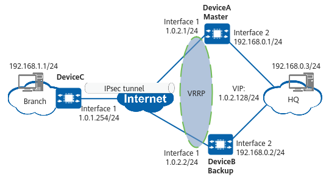

Example for Configuring a Branch to Use a VRRP Virtual IP Address to Establish an IPsec Tunnel with the HQ When VRRP Is Deployed at the HQ
Networking Requirements
In Figure 1, DeviceA and DeviceB set up a VRRP group with the virtual IP address 1.0.2.128. DeviceA functions as the VRRP master, and DeviceB functions as the VRRP backup. An IKE-based IPsec tunnel needs to be established between DeviceC and the VRRP group using the virtual IP address.

In this example, interface 1 and interface 2 represent 10GE 0/0/1 and 10GE 0/0/2, respectively.

Configuration Roadmap
The configuration roadmap is as follows:
- Complete basic interface configurations.
- Configure static routes to ensure that there are reachable routes between the HQ and branch.
- Configure an IPsec policy and apply it to a specific interface.
- Configure VRRP.
Procedure
- Complete basic interface configurations on DeviceA, DeviceB, and DeviceC.
# Complete basic interface configurations on DeviceA.
<HUAWEI> system-view [HUAWEI] sysname DeviceA [DeviceA] interface 10ge 0/0/2 [DeviceA-10GE0/0/2] ip address 192.168.0.1 255.255.255.0 [DeviceA-10GE0/0/2] quit [DeviceA] interface 10ge 0/0/1 [DeviceA-10GE0/0/1] ip address 1.0.2.1 255.255.255.0 [DeviceA-10GE0/0/1] quit
# Complete basic interface configurations on DeviceB.
<HUAWEI> system-view [HUAWEI] sysname DeviceB [DeviceB] interface 10ge 0/0/2 [DeviceB-10GE0/0/2] ip address 192.168.0.2 255.255.255.0 [DeviceB-10GE0/0/2] quit [DeviceB] interface 10ge 0/0/1 [DeviceB-10GE0/0/1] ip address 1.0.2.2 255.255.255.0 [DeviceB-10GE0/0/1] quit
# Complete basic interface configurations on DeviceC.
<HUAWEI> system-view [HUAWEI] sysname DeviceC [DeviceC] interface 10ge 0/0/2 [DeviceC-10GE0/0/2] ip address 192.168.1.1 255.255.255.0 [DeviceC-10GE0/0/2] quit [DeviceC] interface 10ge 0/0/1 [DeviceC-10GE0/0/1] ip address 1.0.1.254 255.255.255.0 [DeviceC-10GE0/0/1] quit
- Configure static routes on DeviceA, DeviceB, and DeviceC.
# Configure static routes on DeviceA.
[DeviceA] ip route-static 1.0.1.0 255.255.255.0 1.0.2.3 [DeviceA] ip route-static 192.168.1.0 255.255.255.0 1.0.2.3
# Configure static routes on DeviceB.
[DeviceB] ip route-static 1.0.1.0 255.255.255.0 1.0.2.3 [DeviceB] ip route-static 192.168.1.0 255.255.255.0 1.0.2.3
# Configure static routes on DeviceC.
[DeviceC] ip route-static 1.0.2.0 255.255.255.0 1.0.1.2 [DeviceC] ip route-static 192.168.0.0 255.255.255.0 1.0.2.128
- Configure an IPsec policy on DeviceA, DeviceB, and DeviceC.
# Configure an IPsec policy on DeviceA.
- Configure an IPsec proposal.
[DeviceA] ipsec proposal default [DeviceA-ipsec-proposal-default] esp authentication-algorithm sha2-256 [DeviceA-ipsec-proposal-default] esp encryption-algorithm aes-192 [DeviceA-ipsec-proposal-default] quit
- Configure an IKE proposal.
[DeviceA] ike proposal 5 [DeviceA-ike-proposal-5] encryption-algorithm aes-128 [DeviceA-ike-proposal-5] dh group14 [DeviceA-ike-proposal-5] authentication-algorithm sha2-256 [DeviceA-ike-proposal-5] authentication-method pre-share [DeviceA-ike-proposal-5] integrity-algorithm hmac-sha2-256 [DeviceA-ike-proposal-5] prf hmac-sha2-256 [DeviceA-ike-proposal-5] quit
- Configure an IKE peer.
[DeviceA] ike peer branch [DeviceA-ike-peer-branch] ike-proposal 5 [DeviceA-ike-peer-branch] pre-shared-key YsHsjx_202206 [DeviceA-ike-peer-branch] remote-address 1.0.1.254 [DeviceA-ike-peer-branch] quit
- Create an ACL rule.
[DeviceA] acl 3000 [DeviceA-acl4-advance-3000] rule 0 permit ip source 192.168.0.0 0.0.0.255 destination 192.168.1.0 0.0.0.255 [DeviceA-acl4-advance-3000] quit
- Configure an IPsec policy.
[DeviceA] ipsec policy branch 1 isakmp [DeviceA-ipsec-policy-isakmp-branch-1] security acl 3000 [DeviceA-ipsec-policy-isakmp-branch-1] ike-peer branch [DeviceA-ipsec-policy-isakmp-branch-1] proposal default [DeviceA-ipsec-policy-isakmp-branch-1] sa trigger-mode auto [DeviceA-ipsec-policy-isakmp-branch-1] quit
By default, the negotiation for IPsec tunnel establishment is triggered by traffic. To enable automatic negotiation for IPsec tunnel establishment, run the sa trigger-mode auto command.
- Apply the IPsec policy to 10GE 0/0/1.
[DeviceA] interface 10ge 0/0/1 [DeviceA-10GE0/0/1] ipsec policy branch [DeviceA-10GE0/0/1] quit
# Configure an IPsec policy on DeviceB.
- Configure an IPsec proposal.
[DeviceB] ipsec proposal default [DeviceB-ipsec-proposal-default] esp authentication-algorithm sha2-256 [DeviceB-ipsec-proposal-default] esp encryption-algorithm aes-192 [DeviceB-ipsec-proposal-default] quit
- Configure an IKE proposal.
[DeviceB] ike proposal 5 [DeviceB-ike-proposal-5] encryption-algorithm aes-128 [DeviceB-ike-proposal-5] dh group14 [DeviceB-ike-proposal-5] authentication-algorithm sha2-256 [DeviceB-ike-proposal-5] authentication-method pre-share [DeviceB-ike-proposal-5] integrity-algorithm hmac-sha2-256 [DeviceB-ike-proposal-5] prf hmac-sha2-256 [DeviceB-ike-proposal-5] quit
- Configure an IKE peer.
[DeviceB] ike peer branch [DeviceB-ike-peer-branch] ike-proposal 5 [DeviceB-ike-peer-branch] pre-shared-key YsHsjx_202206 [DeviceB-ike-peer-branch] remote-address 1.0.1.254 [DeviceB-ike-peer-branch] quit
- Create an ACL rule.
[DeviceB] acl 3000 [DeviceB-acl4-advance-3000] rule 0 permit ip source 192.168.0.0 0.0.0.255 destination 192.168.1.0 0.0.0.255 [DeviceB-acl4-advance-3000] quit
- Configure an IPsec policy.
[DeviceB] ipsec policy branch 1 isakmp [DeviceB-ipsec-policy-isakmp-branch-1] security acl 3000 [DeviceB-ipsec-policy-isakmp-branch-1] ike-peer branch [DeviceB-ipsec-policy-isakmp-branch-1] proposal default [DeviceB-ipsec-policy-isakmp-branch-1] sa trigger-mode auto [DeviceB-ipsec-policy-isakmp-branch-1] quit
By default, the negotiation for IPsec tunnel establishment is triggered by traffic. To enable automatic negotiation for IPsec tunnel establishment, run the sa trigger-mode auto command.
- Apply the IPsec policy to 10GE 0/0/1.
[DeviceB] interface 10ge 0/0/1 [DeviceB-10GE0/0/1] ipsec policy branch [DeviceB-10GE0/0/1] quit
# Configure an IPsec policy on DeviceC.
- Configure an IPsec proposal.
[DeviceC] ipsec proposal default [DeviceC-ipsec-proposal-default] esp authentication-algorithm sha2-256 [DeviceC-ipsec-proposal-default] esp encryption-algorithm aes-192 [DeviceC-ipsec-proposal-default] quit
- Configure an IKE proposal.
[DeviceC] ike proposal 5 [DeviceC-ike-proposal-5] encryption-algorithm aes-128 [DeviceC-ike-proposal-5] dh group14 [DeviceC-ike-proposal-5] authentication-algorithm sha2-256 [DeviceC-ike-proposal-5] authentication-method pre-share [DeviceC-ike-proposal-5] integrity-algorithm hmac-sha2-256 [DeviceC-ike-proposal-5] prf hmac-sha2-256 [DeviceC-ike-proposal-5] quit
- Configure an IKE peer.
[DeviceC] ike peer center [DeviceC-ike-peer-center] ike-proposal 5 [DeviceC-ike-peer-center] pre-shared-key YsHsjx_202206 [DeviceC-ike-peer-center] remote-address 1.0.2.128 [DeviceC-ike-peer-center] quit
- Create an ACL rule.
[DeviceC] acl 3000 [DeviceC-acl4-advance-3000] rule 0 permit ip source 192.168.1.0 0.0.0.255 destination 192.168.0.0 0.0.0.255 [DeviceC-acl4-advance-3000] quit
- Configure an IPsec policy.
[DeviceC] ipsec policy center 1 isakmp [DeviceC-ipsec-policy-isakmp-center-1] security acl 3000 [DeviceC-ipsec-policy-isakmp-center-1] ike-peer center [DeviceC-ipsec-policy-isakmp-center-1] proposal default [DeviceC-ipsec-policy-isakmp-center-1] sa trigger-mode auto [DeviceC-ipsec-policy-isakmp-center-1] quit
By default, the negotiation for IPsec tunnel establishment is triggered by traffic. To enable automatic negotiation for IPsec tunnel establishment, run the sa trigger-mode auto command.
- Apply the IPsec policy to 10GE 0/0/1.
[DeviceC] interface 10ge 0/0/1 [DeviceC-10GE0/0/1] ipsec policy center
- Configure an IPsec proposal.
- Configure VRRP on DeviceA and DeviceB.
# Configure VRRP on DeviceA.
[DeviceA] interface 10ge 0/0/1 [DeviceA-10GE0/0/1] vrrp vrid 1 virtual-ip 1.0.2.128 [DeviceA-10GE0/0/1] quit
# Configure VRRP on DeviceB.
[DeviceB] interface 10ge 0/0/1 [DeviceB-10GE0/0/1] vrrp vrid 1 virtual-ip 1.0.2.128 [DeviceB-10GE0/0/1] vrrp vrid 1 priority 80 [DeviceB-10GE0/0/1] quit
Verifying the Configuration
# Run the display ike sa command on DeviceA, DeviceB, or DeviceC to view SA information.
<DeviceA> display ike sa Total number of IKE SA in all CPU : 1 Total number of phase 1 SA in all CPU : 1 Total number of phase 2 SA in all CPU : 0 Flag Description: RD--READY ST--STAYALIVE RL--REPLACED FD--FADING TO--TIMEOUT HRT--HEARTBEAT LKG--LAST KNOWN GOOD SEQ NO. BCK--BACKED UP M--ACTIVE S--STANDBY A--ALONE NEG--NEGOTIATING Slot 0, cpu 0 IKE SA information : Number of IKE SA : 1, number of IKE SA1: 1, number of IKE SA2: 0 ------------------------------------------------------------------------------------------------------------------------------------ Conn-ID Peer VPN Flag(s) Phase RemoteType RemoteID ------------------------------------------------------------------------------------------------------------------------------------ 33554434 1.0.1.254/500 NEG|A v2:1 ------------------------------------------------------------------------------------------------------------------------------------
# Run the display vrrp command on DeviceA and DeviceB to view the VRRP status.
<DeviceA> display vrrp Type: N: Normal A: Administrator M: Member L: Load-Balance LM: Load-Balance-Member V: Vgmp Total:1 Master:1 Backup:0 Non-active:0 VRID State Interface Type Virtual IP ---------------------------------------------------------------- 1 Master 10GE0/0/1 N 1.0.2.128
# The branch can successfully ping the VRRP virtual IP address.
Configuration Scripts
# DeviceA
# sysname DeviceA # acl number 3000 rule 0 permit ip source 192.168.0.0 0.0.0.255 destination 192.168.1.0 0.0.0.255 # interface 10GE0/0/1 ip address 1.0.2.1 255.255.255.0 vrrp vrid 1 virtual-ip 1.0.2.128 ipsec policy branch # interface 10GE0/0/2 ip address 192.168.0.1 255.255.255.0 # ip route-static 1.0.1.0 255.255.255.0 1.0.2.3 ip route-static 192.168.1.0 255.255.255.0 1.0.2.3 # ike proposal 5 encryption-algorithm aes-128 dh group14 authentication-algorithm sha2-256 authentication-method pre-share integrity-algorithm hmac-sha2-256 prf hmac-sha2-256 # ipsec proposal default esp authentication-algorithm sha2-256 esp encryption-algorithm aes-192 # ike peer branch pre-shared-key %+%##!!!!!!!!!"!!!!"!!!!*!!!!;+Lt~5k*0WQowR5t5h$OJ57\PwDnjX|iiH@!!!!!2jp5!!!!!!;!!!!+<P;I03!pQMZjBJxn=sXM14|(~7xgRo$#YB!!!!!%+%# ike-proposal 5 remote-address 1.0.1.254 # ipsec policy branch 1 isakmp security acl 3000 ike-peer branch proposal default sa trigger-mode auto # return
# sysname DeviceB # acl number 3000 rule 0 permit ip source 192.168.0.0 0.0.0.255 destination 192.168.1.0 0.0.0.255 # interface 10GE0/0/1 ip address 1.0.2.2 255.255.255.0 vrrp vrid 1 virtual-ip 1.0.2.128 vrrp vrid 1 priority 80 ipsec policy branch # interface 10GE0/0/2 ip address 192.168.0.2 255.255.255.0 # ip route-static 1.0.1.0 255.255.255.0 1.0.2.3 ip route-static 192.168.1.0 255.255.255.0 1.0.2.3 # ike proposal 5 encryption-algorithm aes-128 dh group14 authentication-algorithm sha2-256 authentication-method pre-share integrity-algorithm hmac-sha2-256 prf hmac-sha2-256 # ipsec proposal default esp authentication-algorithm sha2-256 esp encryption-algorithm aes-192 # ike peer branch pre-shared-key %+%##!!!!!!!!!"!!!!"!!!!*!!!!/D"Z(43_.'"m=L71r|K0Iqm~M_xCTDlVpJG!!!!!2jp5!!!!!!;!!!!`$mx~^"$P+TnrxO"\%g0LaS%3"H<$FYLep;!!!!!%+%# ike-proposal 5 remote-address 1.0.1.254 # ipsec policy branch 1 isakmp security acl 3000 ike-peer branch proposal default sa trigger-mode auto # return
# sysname DeviceC # acl number 3000 rule 0 permit ip source 192.168.1.0 0.0.0.255 destination 192.168.0.0 0.0.0.255 # interface 10GE0/0/2 ip address 192.168.1.1 255.255.255.0 # interface 10GE0/0/1 ip address 1.0.1.254 255.255.255.0 ipsec policy center # ip route-static 1.0.2.0 255.255.255.0 1.0.1.2 ip route-static 192.168.0.0 255.255.255.0 1.0.2.128 # ike proposal 5 encryption-algorithm aes-128 dh group14 authentication-algorithm sha2-256 authentication-method pre-share integrity-algorithm hmac-sha2-256 prf hmac-sha2-256 # ipsec proposal default esp authentication-algorithm sha2-256 esp encryption-algorithm aes-192 # ike peer center pre-shared-key %+%##!!!!!!!!!"!!!!"!!!!*!!!!U-JYC8g7'M5~b>M]^eJ/;+r*7ZQ@VQ@G%OF!!!!!2jp5!!!!!!;!!!!%0DMSGJCT)H'C_<vj(Q<yI^@)$ES`!ByLUA!!!!!%+%# ike-proposal 5 remote-address 1.0.2.128 # ipsec policy center 1 isakmp security acl 3000 ike-peer center proposal default sa trigger-mode auto # return